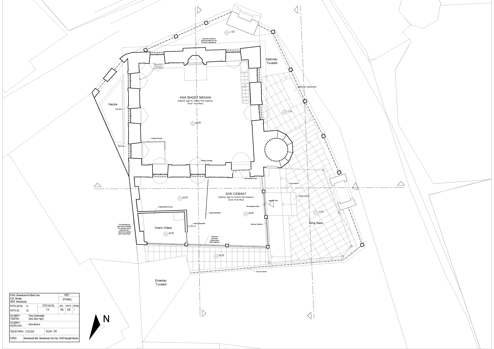
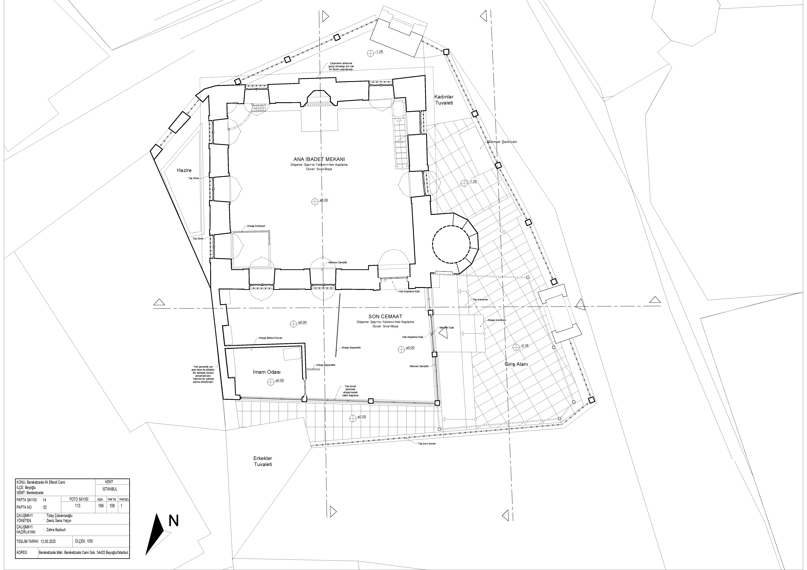
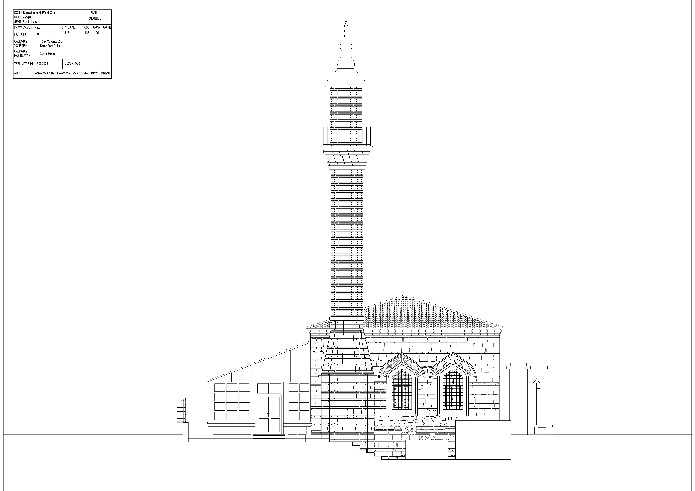
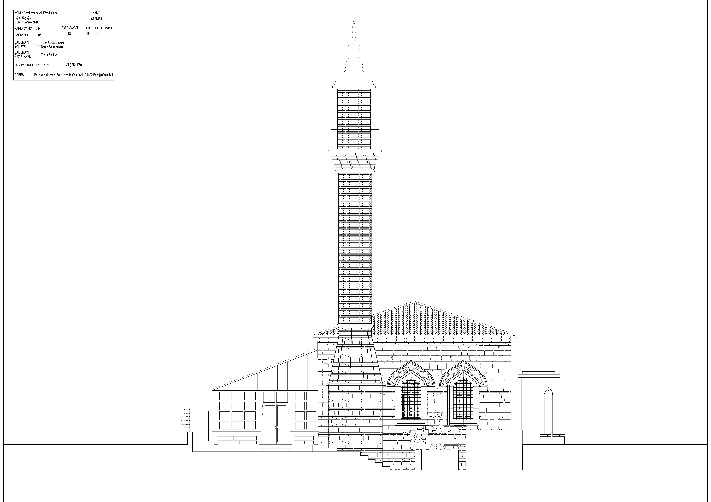
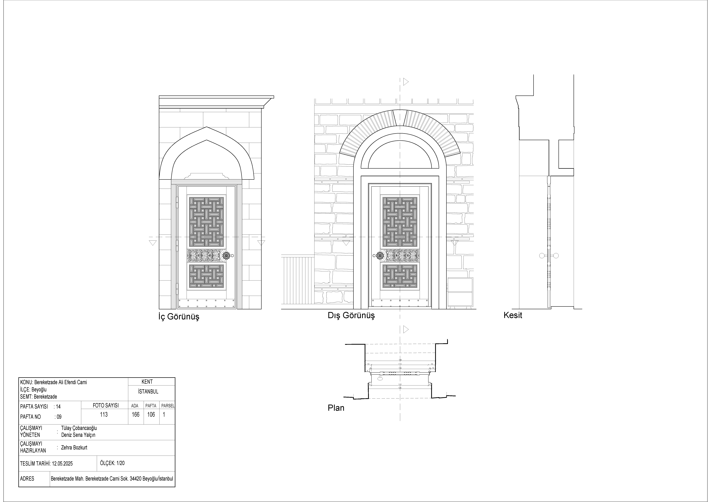
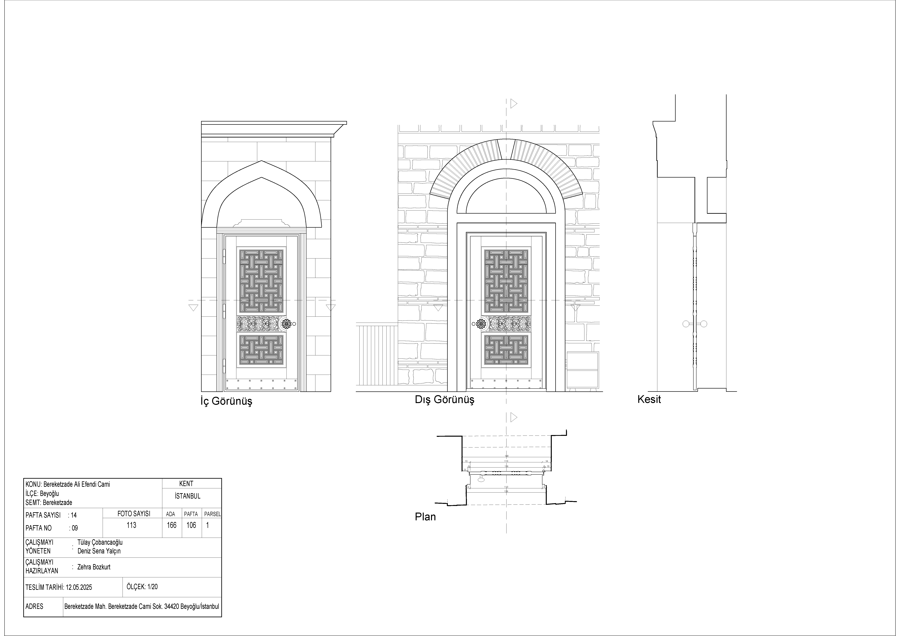
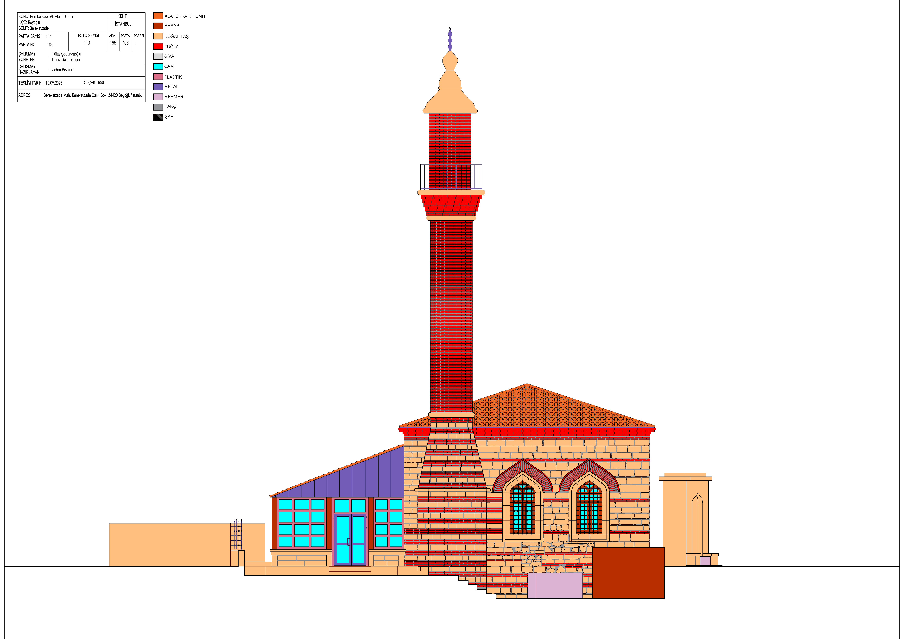
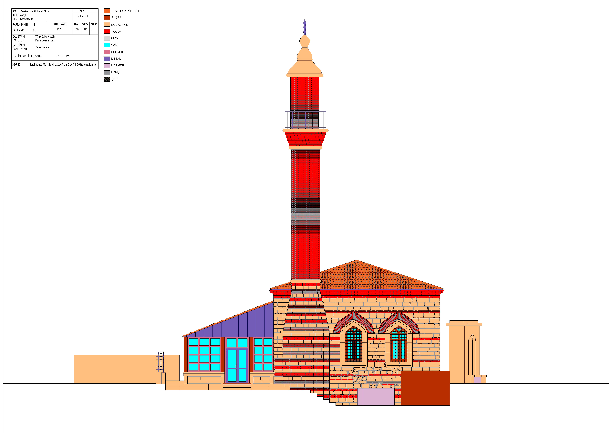

architectural survey and conservation
bereketzade ali efendi mosque
This project is a detailed architectural survey and conservation study focusing on the Bereketzade Ali Efendi Mosque in the Bereketzade Neighborhood of Beyoğlu, Galata, İstanbul. Prepared by a student from Mimar Sinan Fine Arts University, the study analyzes this Ottoman-era mosque, which was originally built in 1705 by Bereketzade Hacı Ali bin Hasan. The mosque is a modest structure, reflecting the simple aesthetics of the Late Classical Ottoman period, featuring a square-like rectangular plan, masonry walls, and a hipped roof. Historically, it served as a traditional neighborhood mosque and was part of a small külliye (complex) that originally included a madrasa and a fountain, making it a social and cultural anchor for the diverse Galata community.
The study highlights that the mosque has suffered significant structural losses and has lost its contextual integrity over time. Due to 19th and 20th-century urban development and demolition, the adjoining madrasa was completely removed (its site is now a car park), and the original fountain was relocated. The current structure is largely the result of a major reconstruction effort carried out by the General Directorate of Foundations between 1977 and 1984, which rebuilt the mosque based on its original plan. The project ultimately concludes that while the mosque's form has been architecturally reproduced and its function restored, the physical erasure of its surrounding complex means it stands today as an example where architectural memory is partially preserved, but the holistic context of the külliye has been lost.
 



 

 



 
